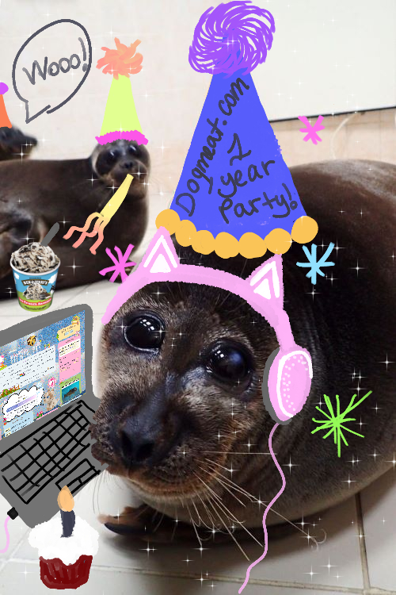

site birth11.apr.24
today marks the 1 year since i created this site :3 my very own home on the internet.
when i first made this site, i never thought how important it would have become to me.
i have already talked about how i came to neocities (and alongside that, the indie web in general) on my about page. i just simply happened to stumble upon it on a random ass wednesday. i have learned A LOT over the months. about site making and about myself.
when i first created my site, i was not in a good place mentally. i had no clue what to do with myself. and it was wearing me down Bad. which i have been very vocal about in my past journal entries. nearly everyday i felt hopeless and without direction.
but being able to work on my site on a daily basis during that period of time really did wonders. even if i was just using it as a distraction. investing my time on this little hobby, learning about HTML and CSS, and building something that was 100% me and seeing how much i was learning and putting it in practice just felt very nice.
i had been wanting to pursue a higher education for the past... 4 years. but i just simply did not know what the fuck would i even study. there is no point to study something that feels irrelevant, impersonal? to me. to study something just for the sake of studying... of having a degree in Something. if i wanted to study, i wanted it to be something that Means Something to me.
working on my website helped me decide that maybe, if i really were to choose a career... if i wanted to do something with my life, i would like to be a web dev or a web designer or something along those lines. and i know that i am SUCH a long wayyyyyy from being any of those things.
after thinking about it Very Hard, i managed to be admitted at my university for a bachelor's degree in computer science and started studying again this january! and i've been really enjoying it! probably because these 1st year classes are easy but a win is still a win. i've been talking to more people, making friends, and most importantly: i've been caring for myself more.
my issues with depression and anxiety didn't magically disappear. i don't think they ever truly will tbh. but ever since i got out of that cycle of not knowing what to do with my life, i have felt such a deep relief inside of me. i no longer have to constantly repeat to myself that i need to die. from the guilt i felt of doing nothing everyday for the past 2 years. though with that said, i have definitely learned to handle them better. and the very rough start i had of this year with my grandma's passing has been a testament to that personal growth i've made.
of course, i don't to make it seem like site was the solution to all of my life problems. i still have a lot to work with. and i still have a lot to figure out. but i'd never thought i'd feel peace in my life ever again. the creation of this site has lead me to all of these things in some way or another! and for that i want to celebrate it's 1 year anniversary. i'm just a little freak with a website that i made bc i was bored as hell one day, but i never thought it would have turned out to be something much more than that.
i'm thankful of having this little space to myself and for everyone i've met because of it. thank you all!
:-]
fallout ep.5
egg n hashbrown
gender07.apr.24
today i've been watching a transgender documentary that i have to watch for my CISO (social sciences) class. i magically didn't have classes today and i dont have classes tomorrow either which means i get to think about my gender for a little bit and talk about it. yay!
almost 3 years ago i started getting the feeling that i am not fully a girl. i'm not very sure where this feeling came from but i was pretty chill about it. i was like "eh, okay then". maybe it's my own rejection of womanhood or whatever tbh. but i remember being 100% sure that my ass was not 100% a girl. either way, i didn't immediately jump to call myself nonbinary since i was still new to all of this.
i started using any pronouns. this was sort of a test for me since i was also trying to figure out what i liked being called the most. i still kinda don't give a fuck but throughout the 2 years i've let people call me whatever, i have found out that i am a huge enjoyer of getting referred to with he/him and "masculine" names. i've kinda had an idea all along LOL... but it's nice when ppl put it into practice.
now here is the tricky part. my native language is spanish. and MAN, spanish is a beautiful language it it is also very gendered... there has been a movement in recent years to use inclusive language and gender neutral pronouns like elle which is great! i don't exactly like it for myself. maybe i haven't gotten used to it for myself yet. and it's a bit tricky. because why am i OK with they/them but can't feel the same with elle which means the exact same thing but in spanish? maybe being in predominantly english LBGTQ spaces online is finally kicking my ass  people in my university have asked me for my pronouns and my brain is just there fighting for it's life trying to figure out what is a way i can say this but in spanish without sounding like an idiot. i think most of the time i give up and say ella. but from now on i'm okay with just using he/she in english and él/ella in spanish. at least to have some connection between the 2 languages.
people in my university have asked me for my pronouns and my brain is just there fighting for it's life trying to figure out what is a way i can say this but in spanish without sounding like an idiot. i think most of the time i give up and say ella. but from now on i'm okay with just using he/she in english and él/ella in spanish. at least to have some connection between the 2 languages.
when it comes to gender expression, i think i've gotten to express myself more freely in the past 2 years as well. you see... ever since i was little idk why but i've always wanted to start dressing a bit more masculine. but i simply kinda couldn't. i remember i used to draw myself with short hair and with a tux when i was like 14 yrs old and thinking this was IT. at least i have the short hair figured out i've been cutting my hair with arts n craft scissors for the past 2 years but wearing a tux or suit, im not picky is still on my bucket list.
i kinda do whatever makes me happy nowadays. i love to wear my dresses and skirts which i hated when i was little but i also love to dress more "masculine" at times. there's this fit combo i love of wearing that's like silk pants, with a plain color shirt and an open button up even with my binder, that shit will not close LOL.... and i love how handsome i look!!!!!! it really makes me smile ヾ(＠⌒ー⌒＠)ノ
and now, i know gender expression ≠ gender identity but all of these things have basically culminated into me adopting the label of nonbinary. at the end of the day all i know is that i'm not a #girl and that i just want to have fun and just be me. that is all i want （*＾-＾*）
crickets
a little bit cold, it's been raining a lot